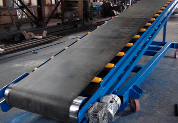
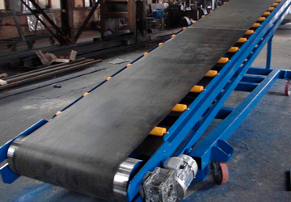

ООО "К-СЕРВИС"
ООО "К-СЕРВИС"
Приоритетным направлением деятельности компании «К-Сервис» является обеспечение бесперебойной поставки запасных частей и расходных материалов на предприятия горнодобывающей, дорожной и строительной отраслей. Поставка широкой товарной номенклатуры, объединенной конвейерным транспортом, позволяет нам взять на себя ответственность быть не только надежными поставщиками, но и осуществлять техническую поддержку наших клиентов. Через обучение и творческий подход мы раскрываем потенциал компании и каждого ее сотрудника. Наша цель – бесперебойная работа Вашего предприятия. В настоящее время наша компания поставляет полный спектр конвейерных лент отечественного и зарубежного производства, формовые резинотехнические изделия, конвейерные ролики, роликоопоры, сита для грохотов, ленты в кольце, ленты для металоулавливателей, конвейерные ленты вертикальных транспортеров, материалы для ремонта и стыковки конвейерных лент. Также ООО «К-Сервис» оказывает услуги по металлообработке. Компания осуществляет как единичные, так и серийные заказы по обработке деталей и сборочных единиц различной сложности и высокой степени чистоты поверхности. Токарные работы осуществляются по имеющемуся чертежу заказчика или образцу изделия. Все работы производятся как на универсальных станках, так и на станках с ЧПУ.
 



Если у Вас остались вопросы, Вы всегда можете задать их и мы судовольствием ответим Вам.